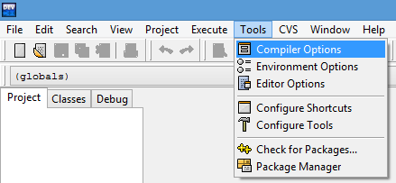
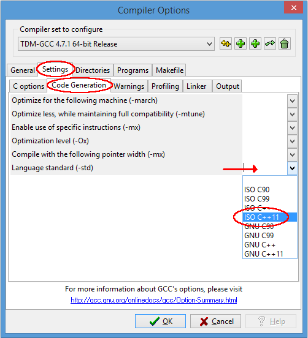

Dev-C++
Dev-C++ is a free IDE for Windows that uses either MinGW or TDM-GCC as underlying compiler.Originally released by Bloodshed Software, but abandoned in 2006, it has recently been forked by Orwell, including a choice of more recent compilers. It can be downloaded from:
http://orwelldevcpp.blogspot.com Installation
Run the downloaded executable file, and follow its instructions. The default options are fine.Support for C++11
By default, support for the most recent version of C++ is not enabled. It shall be explicitly enabled by going to:Tools -> Compiler Options 
Here, select the "Settings" tab, and within it, the "Code Generation" tab. There, in "Language standard (-std)" select "ISO C++ 11":

Ok that. You are now ready to compile C++11!
Compiling console applications
To compile and run simple console applications such as those used as examples in these tutorials it is enough with opening the file with Dev-C++ and hitF11.As an example, try:
File -> New -> Source File (or Ctrl+N)There, write the following:
|
|
Then:
File -> Save As... (or Ctrl+Alt+S)And save it with some file name with a
.cpp extension, such as example.cpp.Now, hitting
F11 should compile and run the program.If you get an error on the type of
x, the compiler does not understand the new meaning given to auto since C++11. Please, make sure you downloaded the latest version as linked above, and that you enabled the compiler options to compile C++11 as described above.